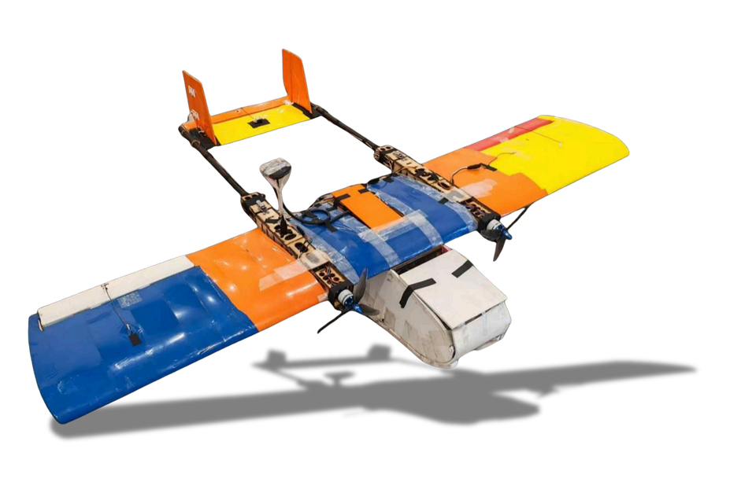

AeroBOT-GDY 固定翼侦察与打击无人机
CUDAC系列赛级侦察与打击平台，集自主侦察、智能识别与精准投放于一体。

产品概述
AeroBOT-GDY 采用经典上单翼双尾撑气动布局设计，整体气动构型经过空气动力学优化调校。该机型在保证机身结构强度、挂载可靠性与飞行安全冗余的前提下，最大限度降低整机空机重量与飞行诱导阻力，具备极强的低速飞行稳定性与整机结构轻量化特性。
作为专为各类飞行器结构设计创新竞赛、固定翼智能飞行科创比拼设计的平台，它有效提升了无人机续航滞空能力与机动响应性能，能够稳定执行低空高精度航点自主巡航、机器视觉实时导航避障及动态目标模拟打击等任务。
核心功能
全流程自动化任务链：深度集成自主空中侦察、智能视觉目标识别、动态目标持续跟踪及定点物资精准投放功能，无需人工远程持续操控即可实现一站式作业。
双系统协同分区工作：配备专用高性能专业飞行控制系统与独立机载任务机制控制系统。飞控系统负责姿态稳定与航线闭环，任务系统专项管控视觉识别与投放机构动作，数据实时交互互动。
开放式二次开发：软硬件接口全面开放，非常适合用于智能视觉感知、自主导航规划与机载任务算法的实景验证、迭代研发与实训测试工作。
产品特点
优异气动布局：采用上单翼双尾撑设计，失速速度低，低速气动控制性能优良。
模块化设计：整机结构设计合理，收纳便捷，部署快速，适应多种比赛与实训场景。
高清无遮挡侦察：配置高清全局快门相机与三轴云台，实现无拖影高清侦察。
全闭环自主制导：支持全闭环自主侦察制导，具备实时弹道解算与航线规划能力。
基本配置参数
教学与竞赛价值
AeroBOT-GDY 专为高校人工智能与无人机领域创新人才培养打造。它不仅是一个飞行平台，更是一个算法验证平台。
学生可利用该平台进行环境态势感知、目标智能研判、运动轨迹锁定等算法的开发与验证。其开放的接口允许对飞行控制系统与任务系统进行深度定制，极大地锻炼了学生在嵌入式开发、计算机视觉及自动控制领域的工程实践能力。
适用场景
适用于全国大学生飞行器设计挑战赛、智能飞行器大赛等各类学科竞赛。
广泛应用于高校无人机工程专业、自动化专业的实训课程，以及科研院所的低空侦察与打击算法验证场景。